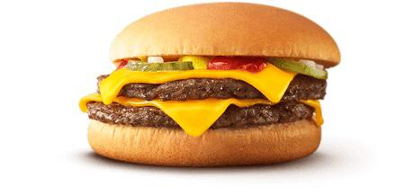

MC Donalds
Japan 350-1103 Saitama, Kawagoe, Kasumigasekihigashi, 1 Chome-1-4
MCdonalds is an American corporation that operates one of the largest chains of fast food restaurants in the world. MCdonalds is super popular in Jappan. In Japan you will find MCdonald's outlets in every big and small city. You can find a MCdonalds outlet on the first floor of Kasumigaseki Station where they sell burgers, french fries, Coffees, shakes, Soft drinks sandwich, Muffins ets.
Recommendation: Double Cheeseburger
